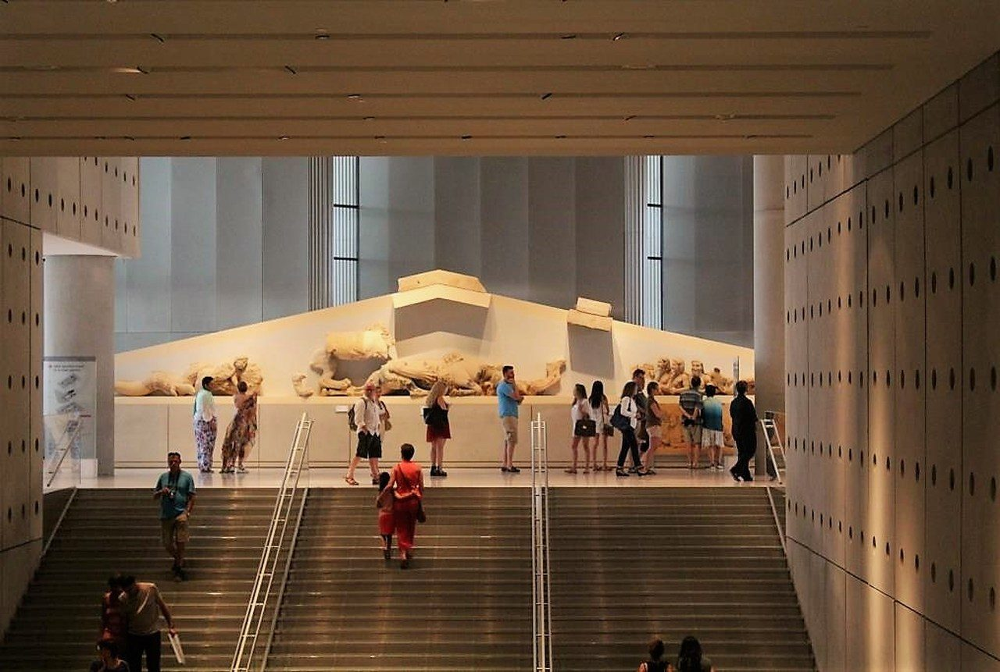
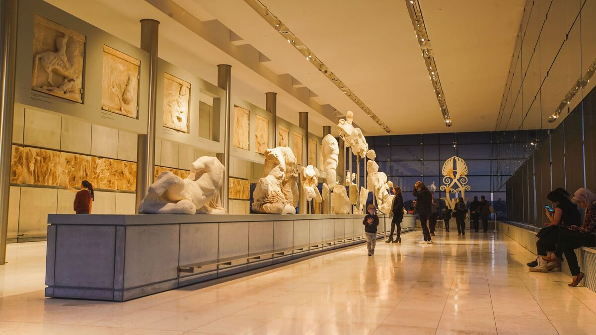

Ψηφιακή Περιήγηση στον Αρχαίο Ελληνικό Πολιτισμό
Το Μουσείο Ακρόπολης αποτελεί ένα από τα σημαντικότερα αρχαιολογικά μουσεία της Ελλάδας. Σκοπός του είναι η προβολή των ευρημάτων της Ακρόπολης και η διατήρηση της πολιτιστικής κληρονομιάς της Αθήνας.
Εκθέματα
Εγκαίνια
Επίπεδα
Επισκέπτες

